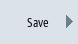
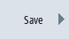

To register your machine in the EUNA (End User Notification Administration) database, create a configuration file with all of the final destination data (address data, logbook data and version data) of the control system.
Preconditions
Procedure
 | 1. | Select the "Diagnostics" operating area. |
   | 2. | Press the "Version" and "Save" softkeys. The "Save version information: Select archiving" window opens. |
 | 3. | Select the required storage location (e.g. USB) and press the "OK" softkey. The "Save version information: Name" window opens. The name and machine number are displayed. |
| | 4. | If necessary, change the name and enter a comment. |
| | 5. | Activate the check box "Configuration data (.XML)", in order to save all of the information about the machine identity. Note: If you also want to output the pure version data in a text format, then activate the checkbox "Version data (.txt)". |
| 6. | Press the "OK" softkey to save the required files. |